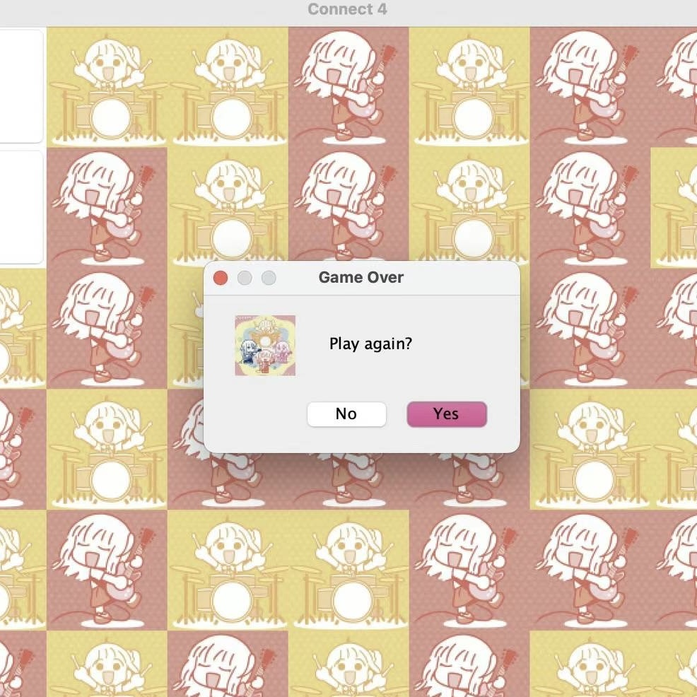
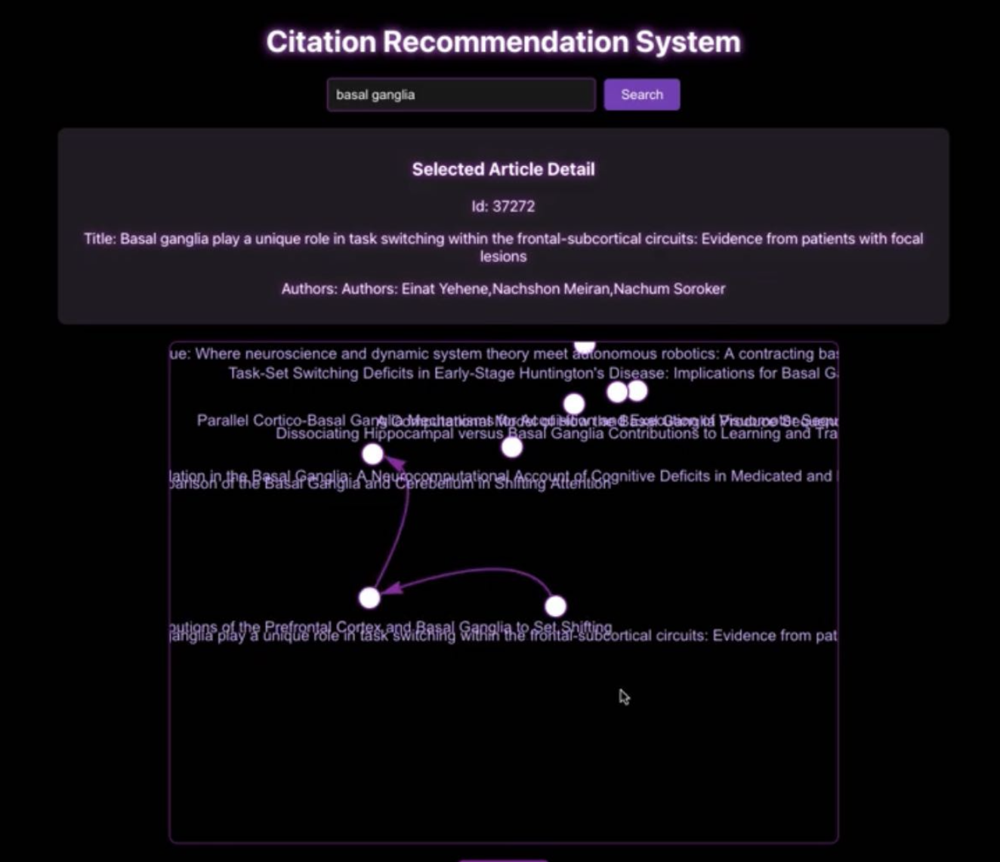
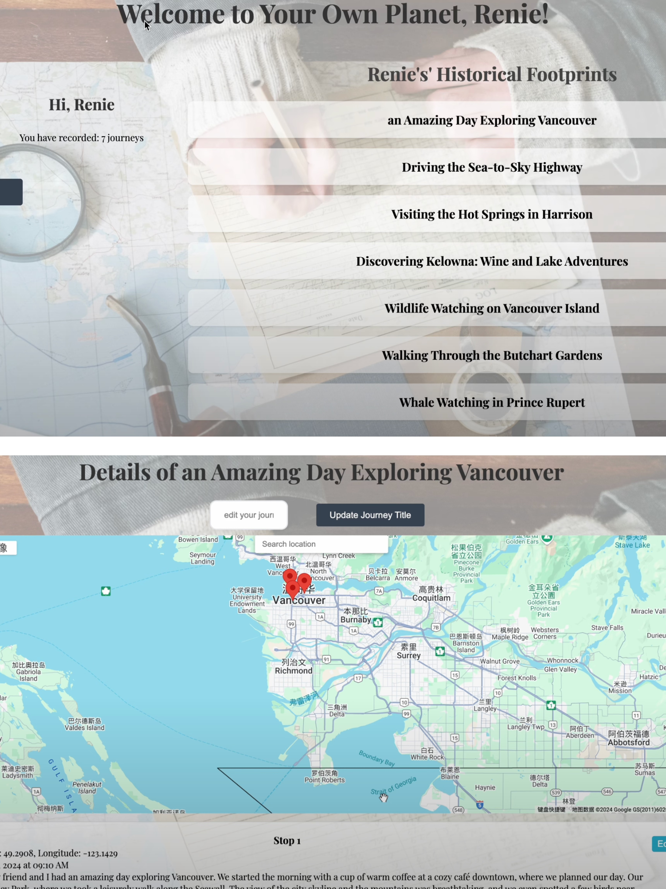

My Projects
-
Connect Four

This is a simple implementation of the Connect Four game using Java. The game features a graphical user interface (GUI) built with Swing, allowing players to play against each other in a two-player format.
-
Thesis Learning Path Generation System

This system proposes the development of a graph theory-based tool to optimize literature learning paths. By representing academic papers as nodes and their relationships as edges in a network, we utilize advanced path-finding algorithms to create an intelligent system that guides learners in a structured progression.
-
Your Own Planet

Your Own Planet is an interactive travel journal platform that allows users to document and share their travel experiences through map interactions. Users can create personal accounts, record their journeys with specific locations, and add detailed entries including photos and descriptions for each place they've visited.
To be continued...